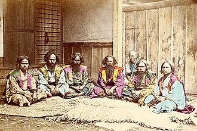
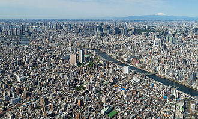

Japan is the second most populous island country with a population of 126.3 million (2019).[11] 124.8 million are Japanese nationals (2019).[262] Honshū is the world's 2nd most populous island and it has 80% of Japan's population. Due to the rugged and mountainous terrain with 66% forest, the population is clustered in urban areas on the coast, plains and valleys.[263][264] Japan is an urban society with only 5% of the labor force working in agriculture. About 80 million of the urban population is heavily concentrated on the Pacific coast of Honshu.[265] In 2010, 90.7% of the total Japanese population lived in cities.[266]

The capital city Tokyo has a population of 13.8 million (2018).[17] It is part of the Greater Tokyo Area, the biggest metropolitan area in the world with 38,140,000 people (2016).[267][18] The area is 13,500 km2 (5,200 sq mi)[268] and the metro area has a population density of 2,642/km2.
Japanese society is linguistically, ethnically and culturally homogeneous,[269][270] composed of 98.1% ethnic Japanese,[6] with small populations of foreign workers.[269] Zainichi Koreans,[271] Chinese, Filipinos, Brazilians mostly of Japanese descent,[272] Peruvians mostly of Japanese descent and Americans are among the small minority groups in Japan.[273] In 2003, there were about 134,700 non-Latin American Western (not including more than 33,000 American military personnel and their dependents stationed throughout the country)[274] and 345,500 Latin American expatriates, 274,700 of whom were Brazilians (said to be primarily Japanese descendants, or nikkeijin, along with their spouses),[272] the largest community of Westerners.[275]

The most dominant native ethnic group is the Yamato people; primary minority groups include the indigenous Ainu[276] and Ryukyuan people, as well as social minority groups like the burakumin.[277] There are persons of mixed ancestry incorporated among the Yamato, such as those from Ogasawara Archipelago.[278] In 2014, foreign-born non-naturalized workers made up only 1.5% of the total population.[279] Japan is widely regarded as ethnically homogeneous, and does not compile ethnicity or race statistics for Japanese nationals; sources varies regarding such claim, with at least one analysis describing Japan as a multiethnic society[280] while another analysis put the number of Japanese nationals of recent foreign descent to be minimal.[270] Most Japanese continue to see Japan as a monocultural society. Former Japanese Prime Minister and current Finance Minister Tarō Asō described Japan as being a nation of "one race, one civilization, one language and one culture", which drew criticism from representatives of ethnic minorities such as the Ainu.[281]
Japan has the second longest overall life expectancy at birth of any country in the world: 83.5 years for persons born in the period 2010–2015.[26][282] The Japanese population is rapidly aging as a result of a post–World War II baby boom followed by a decrease in birth rates. In 2012, about 24.1 percent of the population was over 65, and the proportion is projected to rise to almost 40 percent by 2050.[283]
On September 15, 2018, for the first time, 1 in 5 persons in Japan is 70 or older according to the Ministry of Internal Affairs and Communications. 26.18 million people are 70 or older and accounted for 20.7 percent of the population. Elderly women crossed the 20 million line at 20.12 million, substantially outnumbering the nation's 15.45 million elderly men.[284]
In 2018, the number of resident foreigners was 2.22 million in Japan (1.76% of the population). In 2018, net immigration rose for the sixth straight year with 165,000. The number of foreign workers was 1.46 million in 2018, 29.7% are in the manufacturing sector. 389,000 are from Vietnam and 316,000 are from China.[285] On April 1, 2019, Japan's revised immigration law was enacted. The revision clarifies and better protects the rights of foreign workers. This helps reduce labor shortage in certain sectors of the economy. The reform changes the status of foreign workers to regular employees.[286]